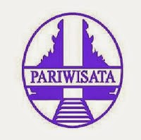

|
POLITEKNIK NEGERI BALITerdepan, Profesional, dan Berdaya Saing Internasional |
| Home | Tentang Kami | Jurusan | Kontak |
|
 Jurusan Pariwisata Program Studi D3 Usaha Perjalanan Wisata : Menghasilkan profesional yang kompeten dengan kemampuan; menerbitkan tiket domestik maupun internasional, menangani operasional biro perjalanan wisata dan kargo, sebagai pemandu wisata baik nusantara maupun mancanegara, menangani penumpang dan bagasi di airport, fasih berbahasa asing khususnya Inggris dan Jepang, mempunyai wawasan objek wisata, menyelenggarakan MICE (Meeting, Incentive, Convention, and Exhibition), dan memasarkan produk pariwisata. Program Studi D3 Perhotelan : Menyiapkan lulusannya dengan kompetensi perhotelan seperti; produksi berbagai masakan nasional dan internasional (food and beverage production), food and beverage service, penanganan operasional restoran, menangani dan menata kamar hotel (house keeping), loundry, merencanakan dan menyelenggarakan MICE, menangani front office, pembelian dan penyimpanan barang hotel di gudang, marketing, serta pencatatan laporan keuangan hotel, sehingga mampu memenuhi kualifikasi tenaga kerja hotel berbintang, restoran, dan kapal pesiar. Program Studi D4 (S1 Terapan) Manajemen Bisnis Pariwisata : Menawarkan keahlian dan keterampilan manajemen pada bidang usaha kepariwisataan, baik perhotelan, usaha travel, maupun MICE yang meliputi manajemen SDM, keuangan, proyek, dan mutu. Para lulusannya disiapkan memiliki pengetahuan, wawasan, dan keterampilan manajerial, sehingga mampu berkompetensi di industri kepariwisataan maupun menjadi wirausahawan yang handal. Program ini adalah program Sarjana Sains Terapan Pariwisata, sehingga setelah menyelesaikan studi memperoleh gelar kesarjanaan S.S.T.Par. |
|
| Copyright IanRizky | 2015 |